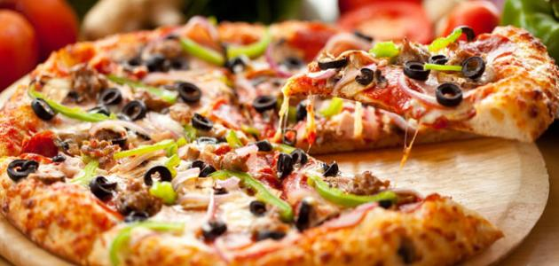
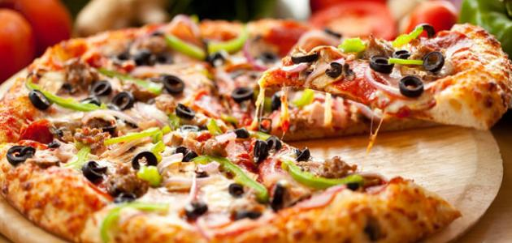

البيتزا تُعتبر البيتزا من أكثر الأكلات سهولةً في التحضير، ومن أكثر الأكلات التي لها مذاق رائع أيضاً، لهذا فإنّ مختلف الأشخاص يفضلونها ويتناولونها باستمرار، وقد اقترنت البيتزا بالمطبخ الإيطاليّ الذي تفنّن بإعدادها، وأضاف إليها لمسات جمالية، ونكهات رائعة جداً جعلت منها أكلة متميزة على كافة المستويات. تتكوّن البيتزا بشكل رئيسي من العجينة وما يوضع على وجهها، وقد تنوّعت وتعددت مكوّنات البيتزا، إلّا أنّ هناك بعض المكوّنات الرئيسيّة والثابتة في الغالب كالصلصة، والجبنة، وتبقى العجينة هي أساس البيتزا الإيطالية، وفيما يلي
طريقة تحضير عجينة البيتزا، والبيتزا نفسها.